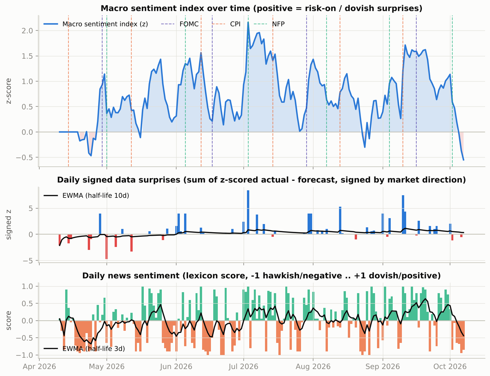
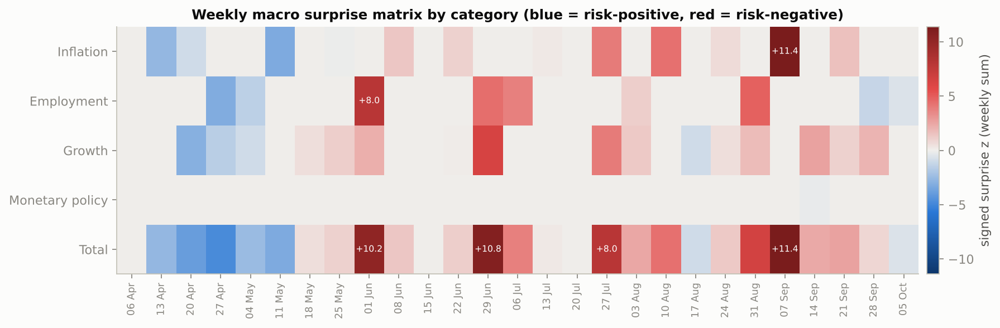
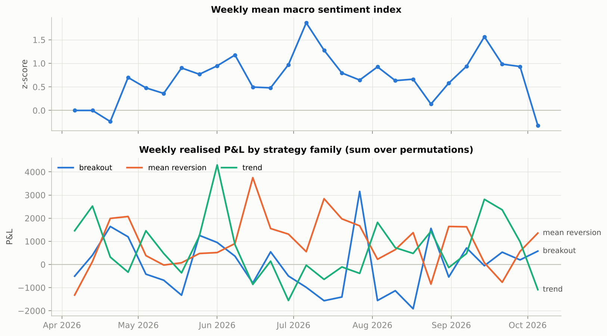
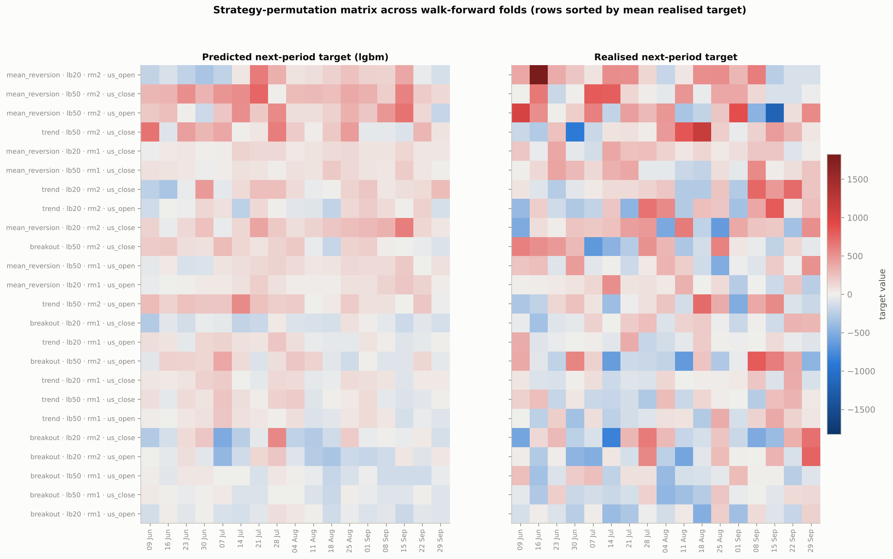
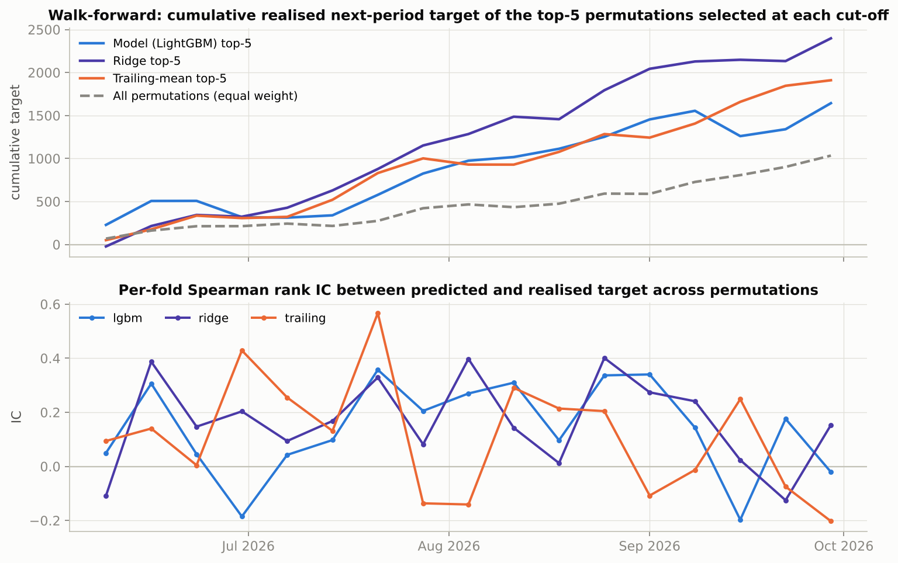
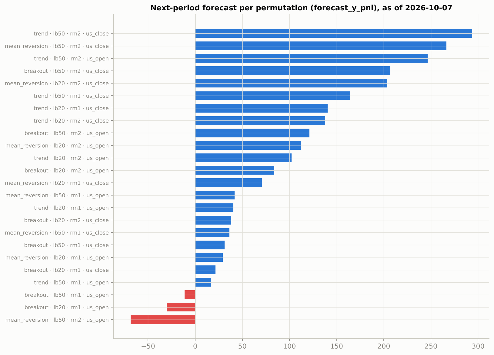
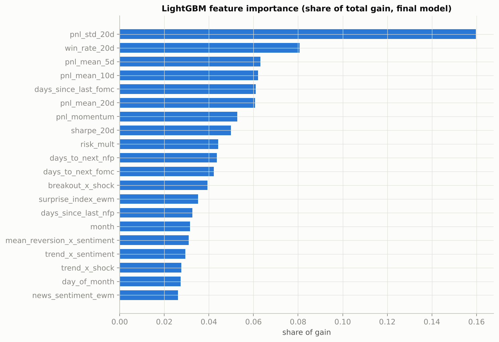

CrowdWisdomTrading macro agent - chart gallery

01_macro_sentiment_timeline

02_weekly_surprise_matrix

03_sentiment_vs_strategy_pnl

04_permutation_matrix_pred_vs_realised

05_walk_forward_performance

06_next_period_forecast

07_feature_importance